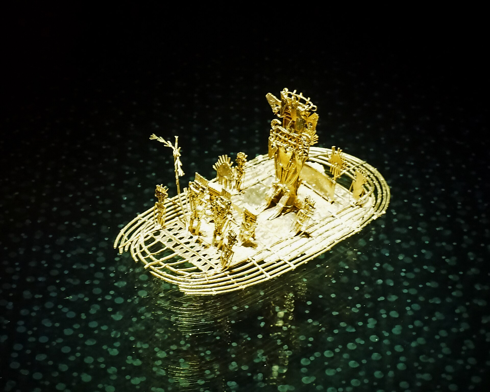
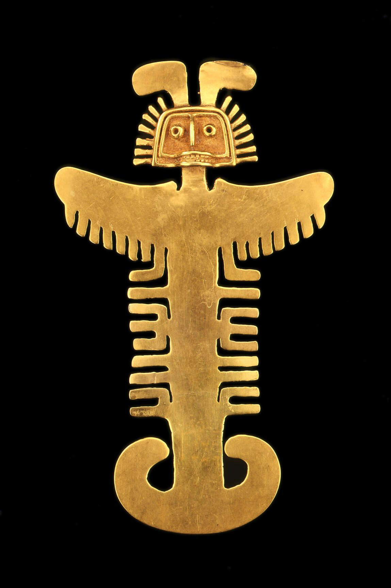
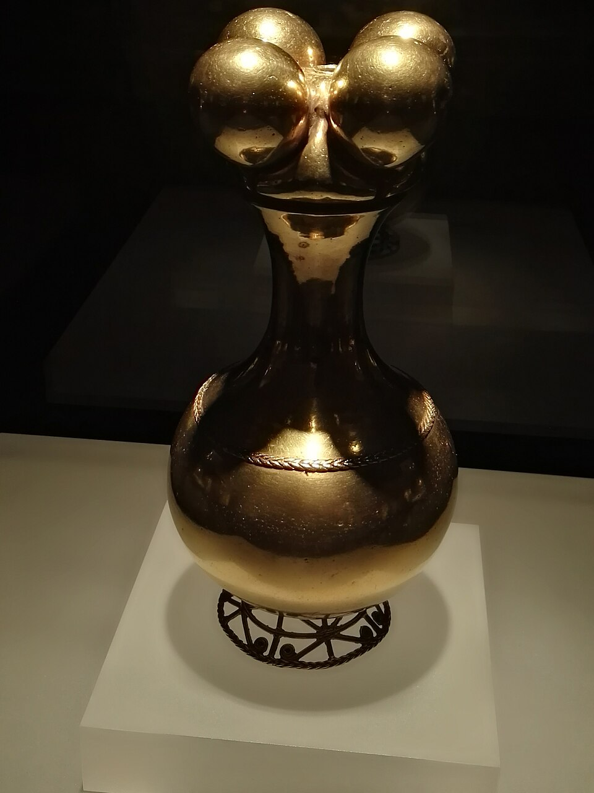

Este objeto representa las joyas de oro usadas por los líderes indígenas. El oro no era símbolo de riqueza económica, sino que representaba la luz del sol y la energía vital.
Piezas reales de orfebrería que inspiran nuestro entorno 3D.

La Balsa Muisca

Pectoral Tolima

Poporo Quimbaya